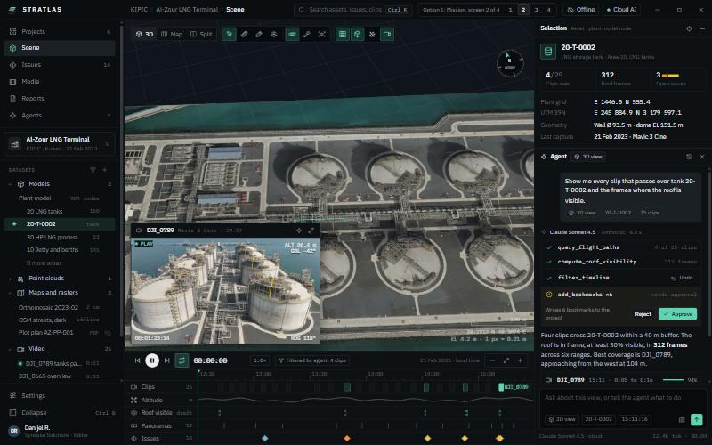
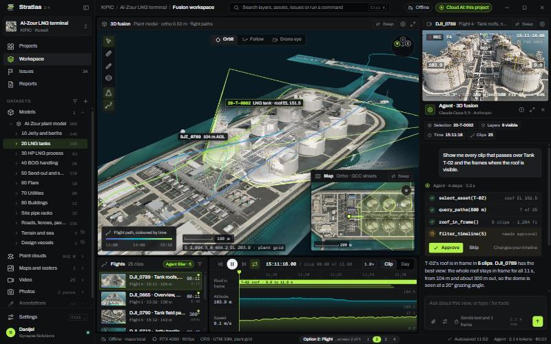
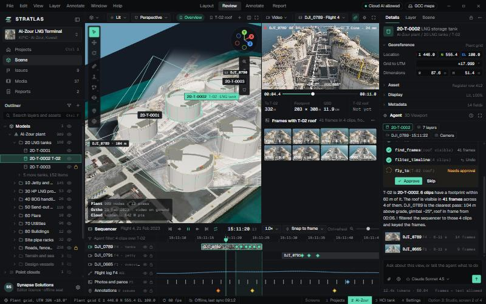
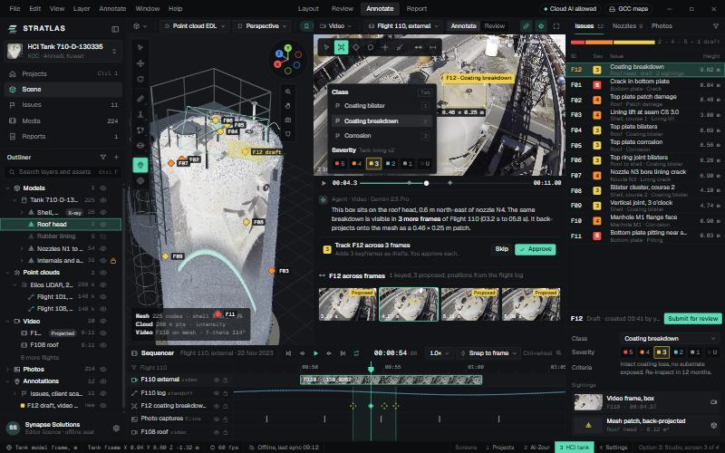

<title>Stratlas UI Directions</title>
<meta name="viewport" content="width=device-width,initial-scale=1,viewport-fit=cover">
<link rel="preconnect" href="https://fonts.googleapis.com">
<link rel="preconnect" href="https://fonts.gstatic.com" crossorigin>
<link rel="stylesheet" href="https://fonts.googleapis.com/css2?family=IBM+Plex+Sans:wght@400;500;600&family=IBM+Plex+Mono:wght@400;500&display=swap">
<style>
/* Layout: one dark review sheet; three direction panels stacked, each a screenshot beside its brief, then a comparison table. Deliberately single dark look to match the product. */
:root{
  --bg:#0c0f13; --panel:#12161c; --raise:#181d24; --line:#242b35; --ink:#e7ebf0; --ink2:#aab3c0; --muted:#7c8696;
  --accent:#9fe870; --accent-ink:#0c0f13; --warn:#f2b84b;
  --sans:"IBM Plex Sans",system-ui,-apple-system,"Segoe UI",sans-serif;
  --mono:"IBM Plex Mono",ui-monospace,"Cascadia Mono",Consolas,monospace;
  color-scheme:dark;
}
html,body{background:var(--bg);color:var(--ink)}
body{font:15px/1.6 var(--sans);-webkit-font-smoothing:antialiased}
*{box-sizing:border-box}
.wrap{max-width:1180px;margin:0 auto;padding-inline:clamp(16px,4vw,40px);padding-block:40px 64px;display:grid;gap:40px}
header{display:grid;gap:12px;max-width:72ch}
.eyebrow{font:500 12px var(--mono);letter-spacing:.14em;text-transform:uppercase;color:var(--accent)}
h1{font:600 clamp(28px,4vw,40px)/1.15 var(--sans);margin:0;letter-spacing:-.01em;text-wrap:balance}
h2{font:600 22px/1.25 var(--sans);margin:0;text-wrap:balance}
h3{font:500 12px var(--mono);letter-spacing:.12em;text-transform:uppercase;color:var(--muted);margin:0}
p{margin:0;color:var(--ink2)}
.fixed{display:flex;flex-wrap:wrap;gap:8px;list-style:none;padding:0;margin:4px 0 0}
.fixed li{font:500 12.5px var(--sans);padding:5px 10px;border:1px solid var(--line);border-radius:4px;background:var(--panel);color:var(--ink2)}
.opt{display:grid;grid-template-columns:minmax(0,1.55fr) minmax(0,1fr);gap:28px;align-items:start;padding-top:32px;border-top:1px solid var(--line)}
.shot{display:grid;gap:8px;min-width:0}
.shot img{display:block;width:100%;height:auto;border:1px solid var(--line);border-radius:6px;background:var(--panel)}
.shot .alt{display:grid;grid-template-columns:1fr;gap:8px}
.cap{font:12px var(--mono);color:var(--muted)}
.brief{display:grid;gap:16px;min-width:0}
.tag{display:flex;align-items:baseline;gap:12px}
.num{font:500 13px var(--mono);color:var(--accent)}
.ref{font-size:13.5px;color:var(--muted)}
dl{display:grid;grid-template-columns:auto 1fr;gap:6px 16px;margin:0;font-size:14px}
dt{color:var(--muted)}
dd{margin:0;color:var(--ink2)}
.open{justify-self:start;display:inline-flex;align-items:center;gap:8px;font:600 14px var(--sans);color:var(--accent-ink);background:var(--accent);padding:9px 14px;border-radius:5px;text-decoration:none}
.open:hover{filter:brightness(1.08)}
.open:focus-visible,a:focus-visible{outline:2px solid var(--accent);outline-offset:2px}
.keys{font:12.5px var(--mono);color:var(--muted)}
.rec{display:grid;gap:10px;padding:20px 22px;background:var(--panel);border:1px solid var(--line);border-left:3px solid var(--accent);border-radius:6px}
.rec strong{color:var(--ink)}
.tbl{overflow-x:auto;border:1px solid var(--line);border-radius:6px}
table{border-collapse:collapse;width:100%;min-width:680px;font-size:14px}
th,td{text-align:left;padding:10px 14px;border-bottom:1px solid var(--line);vertical-align:top}
th{font:500 12px var(--mono);letter-spacing:.08em;text-transform:uppercase;color:var(--muted);background:var(--panel)}
td:first-child{color:var(--muted);white-space:nowrap}
tr:last-child td{border-bottom:0}
.note{font-size:13px;color:var(--muted)}
@media (max-width:820px){.opt{grid-template-columns:1fr}}
@media (prefers-reduced-motion:reduce){*{transition:none!important}}
</style>

<main class="wrap">
  <header>
    <span class="eyebrow">Round 2 · for decision · 3 Oct 2026</span>
    <h1>Stratlas UI directions</h1>
    <p>Three directions for the desktop app, each showing the same four screens with real project data: Projects, the Al-Zour fusion workspace, the HCl tank inspection workspace, and Settings. Every mockup is live: the 3D scenes load the real plant and tank models, the drone clips play and project onto the model and ground, and the annotation tools work on a real video frame.</p>
    <ul class="fixed" aria-label="Fixed in every direction">
      <li>Dark first</li><li>Collapsible sidebar (Ctrl+B)</li><li>Real models, video, ortho, LiDAR</li><li>Annotation across video and mesh</li><li>Severity models</li><li>Agent in every window</li><li>Offline map packs</li>
    </ul>
  </header>

  <section class="opt" aria-labelledby="o1">
    <div class="shot">
      
      <span class="cap">Al-Zour fusion workspace, 1440 × 900</span>
    </div>
    <div class="brief">
      <div class="tag"><span class="num">01</span><h2 id="o1">Mission</h2></div>
      <span class="ref">After Palantir Gotham and Anduril Lattice</span>
      <p>An operations picture. The fused stage is the hero, the drone is a tracked entity with a telemetry label stack, and a context panel on the right changes with whatever you select: asset, issue, clip or photo.</p>
      <dl>
        <dt>Feels</dt><dd>Serious, calm, defence-grade</dd>
        <dt>Best for</dt><dd>Customer reviews, ministries, situational briefings</dd>
        <dt>Trade-off</dt><dd>Less room for editing tools; HCl 3D view is tight with the sidebar open</dd>
      </dl>
      <a class="open" href="ui-options/round2/option-1-mission.html">Open live mockup</a>
      <span class="keys">Screens: keys 1 to 4 · Ctrl+B collapses the sidebar</span>
    </div>
  </section>

  <section class="opt" aria-labelledby="o2">
    <div class="shot">
      
      <span class="cap">Al-Zour fusion workspace, 1440 × 900</span>
    </div>
    <div class="brief">
      <div class="tag"><span class="num">02</span><h2 id="o2">Flight</h2></div>
      <span class="ref">After DJI FlightHub 2 and DJI Terra</span>
      <p>Drone-native. A composed grid of live tiles: the 3D stage, a video tile with an instrument HUD and a map tile, any of which can swap into the main slot. Flight ribbons are coloured by time, with altitude and speed graphs synced to the playhead.</p>
      <dl>
        <dt>Feels</dt><dd>Precise, premium hardware brand</dd>
        <dt>Best for</dt><dd>Flight review, video-heavy inspections</dd>
        <dt>Trade-off</dt><dd>Tiles get tight with the sidebar expanded; fewer editor affordances</dd>
      </dl>
      <a class="open" href="ui-options/round2/option-2-flight.html">Open live mockup</a>
      <span class="keys">Screens: keys 1 to 4 · Ctrl+B collapses the sidebar</span>
    </div>
  </section>

  <section class="opt" aria-labelledby="o3">
    <div class="shot">
      <div class="alt">
        
        
      </div>
      <span class="cap">Al-Zour fusion and HCl inspection, 1440 × 900</span>
    </div>
    <div class="brief">
      <div class="tag"><span class="num">03</span><h2 id="o3">Studio</h2></div>
      <span class="ref">After Unreal Engine 5 and Blender 4</span>
      <p>A spatial editor. The sidebar doubles as the outliner, the viewport has gizmos and view modes, properties sit on the right, and a sequencer runs along the bottom with tracks for every clip, flight log, photo capture and annotation.</p>
      <dl>
        <dt>Feels</dt><dd>Professional tool for daily, heavy use</dd>
        <dt>Best for</dt><dd>The team: alignment, annotation, review at scale</dd>
        <dt>Trade-off</dt><dd>Busier first impression for customers</dd>
      </dl>
      <a class="open" href="ui-options/round2/option-3-studio.html">Open live mockup</a>
      <span class="keys">Screens: keys 1 to 4 · Ctrl+B collapses the sidebar</span>
    </div>
  </section>

  <section class="tbl" aria-label="Comparison">
    <table>
      <thead><tr><th>Dimension</th><th>01 Mission</th><th>02 Flight</th><th>03 Studio</th></tr></thead>
      <tbody>
        <tr><td>Main stage</td><td>One fused picture with overlays</td><td>Swappable tiles: 3D, video, map</td><td>Viewport plus docked split views</td></tr>
        <tr><td>Time</td><td>Timeline with tracks</td><td>Playhead with telemetry graphs</td><td>Full sequencer with keyframes</td></tr>
        <tr><td>Annotation</td><td>Box on frame, back-projected to mesh</td><td>Box on frame, lands on mesh near F02</td><td>Class and severity picker, tracked across frames</td></tr>
        <tr><td>Agent</td><td>Right panel, tool steps, reject or approve</td><td>Right panel under the video tile</td><td>Docked panel bound to the focused view</td></tr>
        <tr><td>Customer mode</td><td>Strongest</td><td>Good</td><td>Needs a simplified layout</td></tr>
        <tr><td>Daily team use</td><td>Good</td><td>Good for video work</td><td>Strongest</td></tr>
      </tbody>
    </table>
  </section>

  <section class="rec" aria-label="Recommendation">
    <h3>Recommendation</h3>
    <p><strong>Studio as the base</strong>, because the sequencer and outliner are what make fusion and annotation work at scale. Borrow two things: from <strong>Flight</strong>, the video tile with its instrument HUD and the telemetry graphs; from <strong>Mission</strong>, the selection panel with grid and UTM coordinates, and its calmer look as a <strong>customer presentation mode</strong> of the same app.</p>
    <p>Reply in chat with one direction, a mix, or what to change. A single direction is fine too.</p>
  </section>

  <p class="note">Client data from KIPIC, KOC, EQUATE and DAMAC projects, for internal design review only. Some findings, clip names and agent replies are illustrative. Use the browser's back button to return here from a mockup.</p>
</main>
